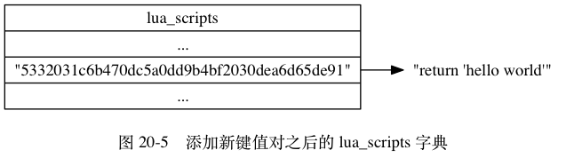

EVAL 命令的执行过程可以分为以下三个步骤：
lua_scripts 字典，
等待将来进一步使用。以下三个小节将以：
redis> EVAL "return 'hello world'" 0
"hello world"
命令为示例， 分别介绍 EVAL 命令执行的三个步骤。
当客户端向服务器发送 EVAL 命令，
要求执行某个 Lua 脚本的时候，
服务器首先要做的就是在 Lua 环境中，
为传入的脚本定义一个与这个脚本相对应的 Lua 函数：
其中，
Lua 函数的名字由 f_ 前缀加上脚本的 SHA1 校验和（四十个字符长）组成，
而函数的体（body）则是脚本本身。
举个例子， 对于命令：
EVAL "return 'hello world'" 0
来说， 服务器将在 Lua 环境中定义以下函数：
function f_5332031c6b470dc5a0dd9b4bf2030dea6d65de91()
return 'hello world'
end
因为客户端传入的脚本为 return 'hello world' ，
而这个脚本的 SHA1 校验和为 5332031c6b470dc5a0dd9b4bf2030dea6d65de91 ，
所以函数的名字为 f_5332031c6b470dc5a0dd9b4bf2030dea6d65de91 ，
而函数的体则为 return 'hello world' 。
使用函数来保存客户端传入的脚本有以下好处：
lua_scripts 字典¶EVAL 命令要做的第二件事是将客户端传入的脚本保存到服务器的 lua_scripts 字典里面。
举个例子， 对于命令：
EVAL "return 'hello world'" 0
来说，
服务器将在 lua_scripts 字典中新添加一个键值对，
其中键为 Lua 脚本的 SHA1 校验和：
5332031c6b470dc5a0dd9b4bf2030dea6d65de91
而值则为 Lua 脚本本身：
return 'hello world'
添加新键值对之后的 lua_scripts 字典如图 20-5 所示。

在为脚本定义函数，
并且将脚本保存到 lua_scripts 字典之后，
服务器还需要进行一些设置钩子、传入参数之类的准备动作，
才能正式开始执行脚本。
整个准备和执行脚本的过程如下：
KEYS 数组和 ARGV 数组，
然后将这两个数组作为全局变量传入到 Lua 环境里面。举个例子， 对于命令：
EVAL "return 'hello world'" 0
来说， 服务器将执行以下动作：
KEYS 数组或 ARGV 数组这一步。f_5332031c6b470dc5a0dd9b4bf2030dea6d65de91 函数。f_5332031c6b470dc5a0dd9b4bf2030dea6d65de91 函数所得的结果 "hello world" 保存到客户端状态的输出缓冲区里面。至此， 命令：
EVAL "return 'hello world'" 0
的执行算是告一段落， 之后服务器只要将保存在输出缓冲区里面的执行结果返回给执行 EVAL 命令的客户端就可以了。